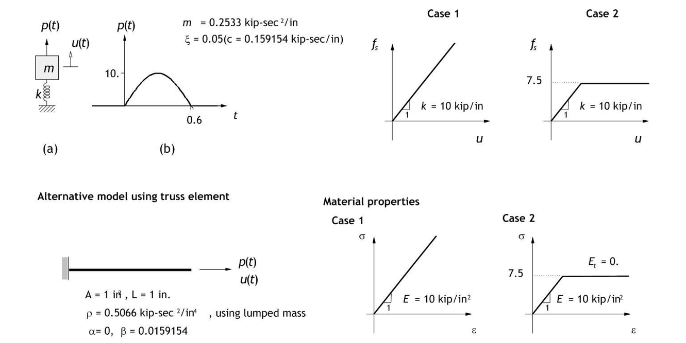
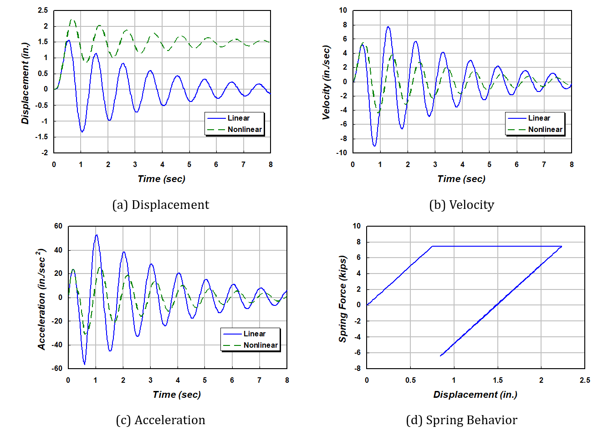
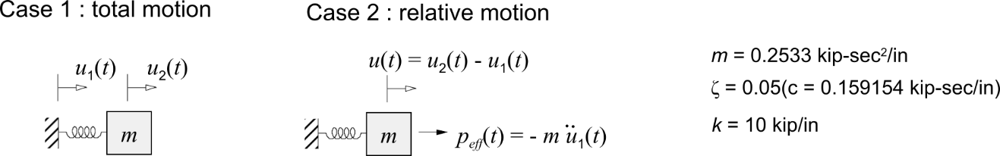
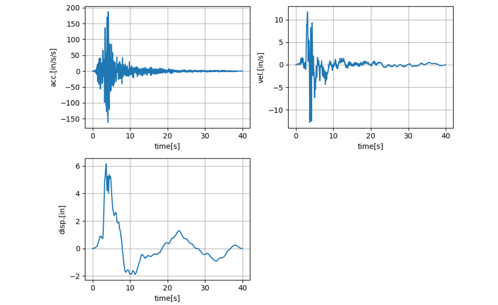
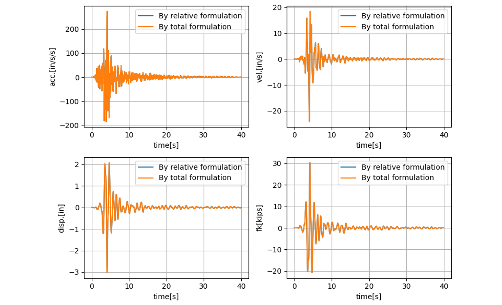
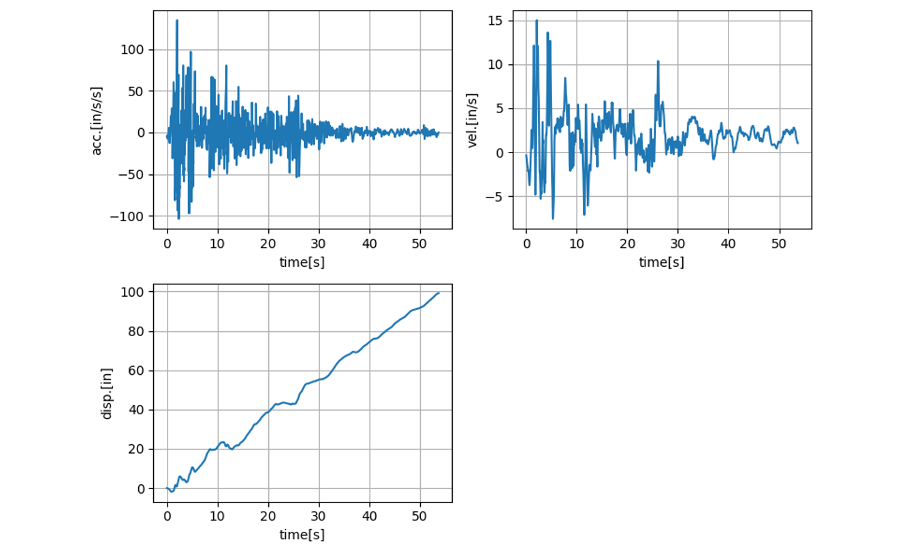
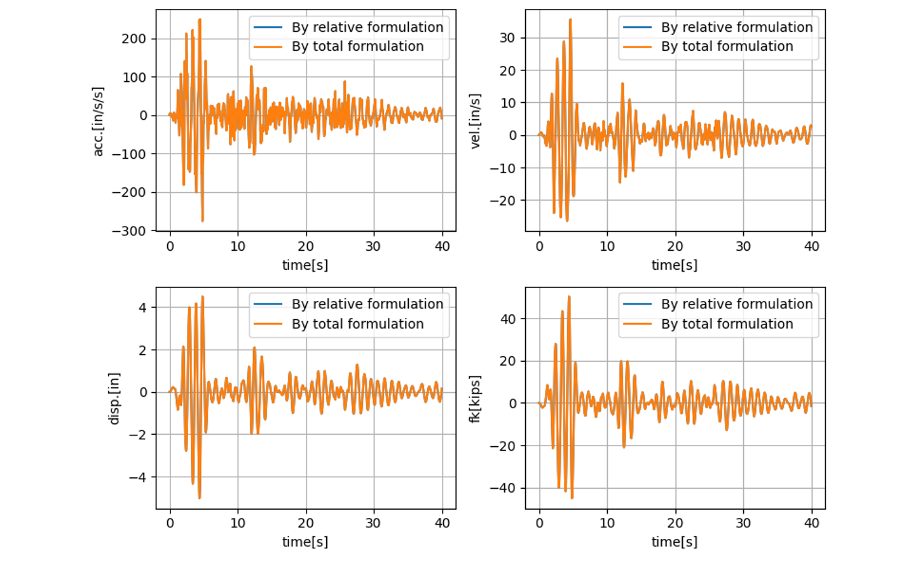
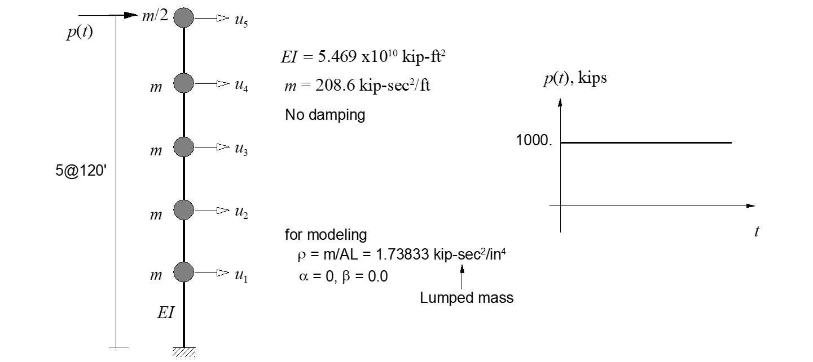
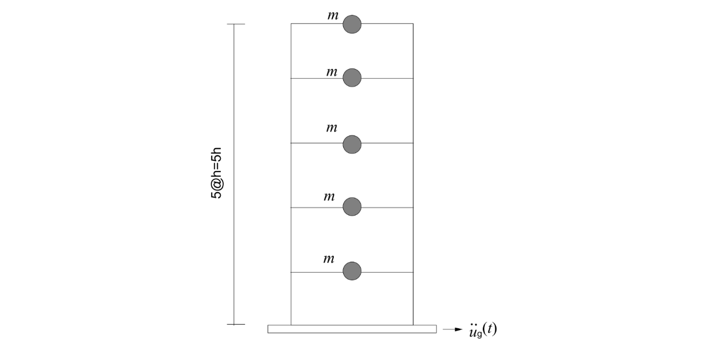
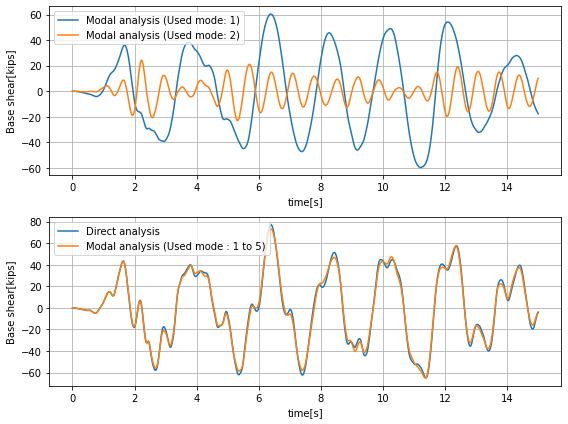

E.7 Dynamic Analysis using Spring and Mass Elements
E.7.1 SDF System
When a half-cycle sine pulse is applied as an external force, analyses are performed for both linear and nonlinear single-degree-of-freedom (SDOF) systems. For the linear system, the properties are \(m = 0.2533\ \text{kip·sec}^2/\text{in.}\), \(k = 10\ \text{kips/in.}\), and \(\zeta = 0.05\) (\(c = 0.159154\ \text{kip·sec/in.}\)). For the nonlinear system, the spring constant is defined by an elastic–plastic bilinear model, as shown in Figure E.7.1. As illustrated, the model was constructed using a combination of Spring, PointMass, and Damper elements, and an equivalent model was also created using Truss elements for comparison.

Figure E.7.1 Analysis Model
Table E.7.1 Linear SDF system ($\small \Delta t$ = 0.1 sec)
| Time | force | disp. | vel. | acc. |
|---|---|---|---|---|
| 0.1 | 5 | 0.043667 | 0.87334 | 17.467 |
| 0.2 | 8.6603 | 0.23262 | 2.9057 | 23.18 |
| 0.3 | 10 | 0.61207 | 4.6833 | 12.372 |
| 0.4 | 8.6603 | 1.0825 | 4.7261 | -11.517 |
| 0.5 | 5 | 1.431 | 2.2421 | -38.162 |
| 0.6 | 0 | 1.4231 | -2.3996 | -54.674 |
| 0.7 | 0 | 0.96218 | -6.8184 | -33.701 |
| 0.8 | 0 | 0.19078 | -8.6096 | -2.122 |
| 0.9 | 0 | -0.60438 | -7.2935 | 28.443 |
| 1 | 0 | -1.1442 | -3.5028 | 47.372 |
Table E.7.2 Nonlinear SDF system ($\small \Delta t$ = 0.1 sec)
| Time | force | disp. | vel. | acc. |
|---|---|---|---|---|
| 0.1 | 5 | 0.043667 | 0.87334 | 17.467 |
| 0.2 | 8.6603 | 0.23262 | 2.9057 | 23.18 |
| 0.3 | 10 | 0.61207 | 4.6833 | 12.372 |
| 0.4 | 8.6603 | 1.1144 | 5.3625 | 1.2112 |
| 0.5 | 5 | 1.6215 | 4.7794 | -12.873 |
| 0.6 | 0 | 1.9892 | 2.5745 | -31.227 |
| 0.7 | 0 | 2.0952 | -0.4531 | -29.324 |
| 0.8 | 0 | 1.9241 | -2.9688 | -20.989 |
| 0.9 | 0 | 1.5603 | -4.3075 | -5.7851 |
| 1 | 0 | 1.1416 | -4.067 | 10.595 |

Figure E.7.2 Analysis Results
Input file
-
mck1.inp : Linear SDF System Modeled with Mass, Damper, and Spring
-
mck1n.inp : Nonlinear SDF System Modeled with Mass, Damper, and Spring
-
mck2.inp : Linear SDF System Modeled with Mass, Truss, and Rayleigh Damping
-
mck1modal.inp : Modal Analysis of Linear SDF System Modeled with Mass, Damper, and Spring
E.7.2 Total and Relative Motion in Eartqhuake
In seismic analysis, depending on the input ground motion, the formulation can be expressed in terms of relative motion or absolute motion. The following is the governing equation for seismic input formulated in absolute motion.
If the ground motion is assumed to be the product of a direction vector and a time-dependent motion, the total motion can be expressed as the sum of the relative motion and the ground motion.
Here, the direction vector \(\mathbf{r}\) represents the direction of the ground motion. Rearranging the governing equation in terms of relative motion yields the following.
In the above, \(\small \mathbf{K r} = \mathbf{0}\) is satisfied, which corresponds to rigid body motion. However, for the mass matrix, \(\small \mathbf{M r} \neq \mathbf{0}\). For the damping matrix, when it is composed of local dampers, \(\small \mathbf{C r} = \mathbf{0}\) is satisfied. When Rayleigh damping is applied, \(\small \mathbf{C} = \alpha\mathbf{M} + \beta\mathbf{K}\), so for mass-proportional damping, \(\small \mathbf{C r} \neq \mathbf{0}\). In general, the governing equation for relative motion considers only \(\small -\mathbf{M r} \ddot{u}_{g}(t)\) as follows.
This is equivalent to the governing equation for absolute motion when mass-proportional damping is not present.
The figure illustrates an example of a single-degree-of-freedom (SDOF) system. In this example, the differences in results according to the formulation were examined for an SDOF system. The input ground motions considered were both baseline-corrected and non–baseline-corrected earthquake records.

Figure E.7.3 SDF system with ground input
When using the baseline-corrected Loma Prieta earthquake record (RSN765_LOMAP_G01090), it was confirmed that there is no difference in the response values between the two formulations. Similarly, when applying the non–baseline-corrected El Centro earthquake record (Caltech version), the response values were found to be identical when comparing relative displacements. However, in cases where the input ground motions differ by location, applying non–baseline-corrected earthquake records may cause problems.
In the input examples, *Load, TYPE=Earthquake applies \(\small -\mathbf{M r} \ddot{u}_{g}(t)\) on the right-hand side of the relative motion formulation as an external load. In contrast, *Load, TYPE=Displacement applies the displacement history directly to the nodes, thereby using the absolute motion formulation. When using *Load, TYPE=Displacement, acceleration, velocity, and displacement histories are required. If only one of these histories is available, the others can be generated using the numerical integration and differentiation tools built into Hyfeast. The example verifies all of these cases.

Figure E.7.4 Loma Prieta Earthquake (RSN765_LOMAP_G01090)

Figure E.7.5 Response by Loma Prieta Earthquake (RSN765_LOMAP_G01090)

Figure E.7.6 El Centro Earthquake (Caltech version)

Figure E.7.7 Reponse by El Centro Earthquaek (Caltech version)
Input file
-
gLOMAP.inp: Exmaple using the Loma Priata Earthquaek (RSN765_LOMAP_G01090)
-
gELCEN.inp : Exmaple using the El Centro Earthquake(Caltech version)
E.7.3 Dynamic Analysis of MDF System
An analysis is performed for a multi-degree-of-freedom (MDOF) system subjected to a step function external force, as presented in AK Chopra (2005).

Figure E.7.8 MDF System with Load Input
Table E.7.3 Time History Analysis of a MDF system (△t = 0.1 sec)
TIME (sec) |
u1 | u2 | u3 | u4 | u5 | |||||
|---|---|---|---|---|---|---|---|---|---|---|
| hyFeast | Chopra | hyFeast | Chopra | hyFeast | Chopra | hyFeast | Chopra | hyFeast | Chopra | |
| 0 | 0.0000 | 0.0000 | 0.0000 | 0.0000 | 0.0000 | 0.0000 | 0.0000 | 0.0000 | 0.0000 | 0.0000 |
| 0.1 | -0.0003 | -0.0003 | -0.0009 | -0.0009 | -0.0003 | -0.0003 | 0.0051 | 0.0051 | 0.0172 | 0.0172 |
| 0.2 | -0.0024 | -0.0024 | -0.0046 | -0.0046 | 0.0028 | 0.0028 | 0.0296 | 0.0297 | 0.0753 | 0.0753 |
| 0.3 | -0.0057 | -0.0057 | -0.0056 | -0.0056 | 0.0214 | 0.0214 | 0.0830 | 0.0830 | 0.1682 | 0.1682 |
| 0.4 | -0.0025 | -0.0025 | 0.0122 | 0.0122 | 0.0660 | 0.0660 | 0.1602 | 0.1602 | 0.2798 | 0.2799 |
| 0.5 | 0.0123 | 0.0123 | 0.0553 | 0.0553 | 0.1366 | 0.1367 | 0.2573 | 0.2574 | 0.4043 | 0.4044 |
| 0.6 | 0.0301 | 0.0301 | 0.1095 | 0.1095 | 0.2270 | 0.2270 | 0.3754 | 0.3755 | 0.5435 | 0.5436 |
| 0.7 | 0.0440 | 0.0440 | 0.1598 | 0.1598 | 0.3221 | 0.3222 | 0.5104 | 0.5105 | 0.7125 | 0.7127 |
| 0.8 | 0.0557 | 0.0557 | 0.2013 | 0.2013 | 0.4084 | 0.4085 | 0.6552 | 0.6553 | 0.9226 | 0.9228 |
| 0.9 | 0.0631 | 0.0631 | 0.2343 | 0.2343 | 0.4900 | 0.4900 | 0.8073 | 0.8075 | 1.1586 | 1.1588 |
| 1 | 0.0689 | 0.0690 | 0.2683 | 0.2683 | 0.5779 | 0.5780 | 0.9655 | 0.9657 | 1.3919 | 1.3921 |
| 1.1 | 0.0831 | 0.0831 | 0.3176 | 0.3177 | 0.6767 | 0.6769 | 1.1214 | 1.1216 | 1.6065 | 1.6068 |
| 1.2 | 0.1037 | 0.1037 | 0.3810 | 0.3811 | 0.7839 | 0.7841 | 1.2698 | 1.2700 | 1.7972 | 1.7974 |
| 1.3 | 0.1219 | 0.1220 | 0.4402 | 0.4403 | 0.8883 | 0.8885 | 1.4114 | 1.4115 | 1.9674 | 1.9676 |
| 1.4 | 0.1341 | 0.1341 | 0.4838 | 0.4838 | 0.9735 | 0.9736 | 1.5388 | 1.5389 | 2.1339 | 2.1341 |
| 1.5 | 0.1406 | 0.1406 | 0.5095 | 0.5095 | 1.0319 | 1.0319 | 1.6456 | 1.6457 | 2.3011 | 2.3012 |
| 1.6 | 0.1413 | 0.1412 | 0.5200 | 0.5199 | 1.0718 | 1.0718 | 1.7338 | 1.7339 | 2.4461 | 2.4462 |
| 1.7 | 0.1408 | 0.1408 | 0.5291 | 0.5290 | 1.1053 | 1.1053 | 1.8001 | 1.8000 | 2.5469 | 2.5469 |
| 1.8 | 0.1479 | 0.1479 | 0.5486 | 0.5486 | 1.1352 | 1.1352 | 1.8389 | 1.8388 | 2.5954 | 2.5953 |
| 1.9 | 0.1575 | 0.1575 | 0.5705 | 0.5705 | 1.1582 | 1.1582 | 1.8519 | 1.8518 | 2.5929 | 2.5926 |
| 2 | 0.1600 | 0.1600 | 0.5781 | 0.5781 | 1.1637 | 1.1636 | 1.8404 | 1.8402 | 2.5544 | 2.5540 |
Input file
- mdf.inp
E.7.4 Five Story Building
The time history analysis results for a five-story building presented in AK Chopra (2009) are compared. The floor weight is 100 kips, the interstory spring stiffness is 31.54 kips/in, and the ground motion input is the El Centro (1940) earthquake record provided in AK Chopra (2009). A comparison was made between the direct integration method with 5% Rayleigh damping applied to the full matrices (Direct) and the modal analysis method with 5% modal damping, with results also shown for the case where only the first and second modes are considered. Since the given system has only five degrees of freedom, the modal and direct analyses should theoretically yield identical results; however, differences arise due to the different approaches used to incorporate damping.

Figure E.2.9 Five Story Building(Example from AK Chopra (2009) Section 13.2.6)

Figure E.7.10 Analysis Result
Input file
- fivestory.inp
References
-
Example 5.3(pp. 178), Example 5.5 (pp. 188) in Chopra, A. K. (2009). Dynamics of structures: Theory and applications to earthquake engineering (4th ed.). Prentice Hall.
-
Example 5.3 (pp. 168), Example 5.5 (pp.179) in Chopra, A. K. (1995). Dynamics of structures: Theory and applications to earthquake engineering. Prentice Hall.
-
Example 15.2 (p.577) in Chopra, A. K. (1995). Dynamics of structures: Theory and applications to earthquake engineering. Prentice Hall.
-
Section 13.2.6 Exmaple: Five-Story Shear Frame (p.531) in Chopra, A. K. (2009). Dynamics of structures: Theory and applications to earthquake engineering (4th ed.). Prentice Hall.